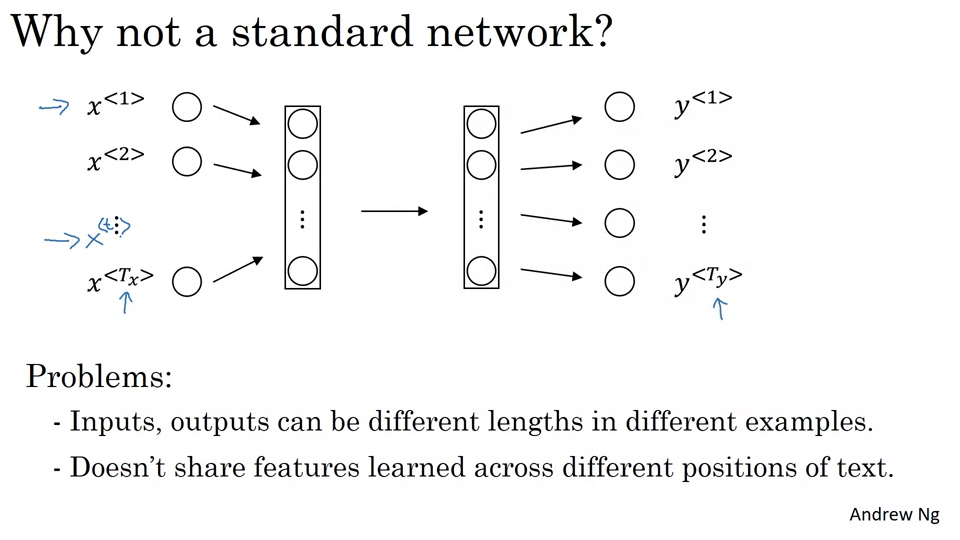
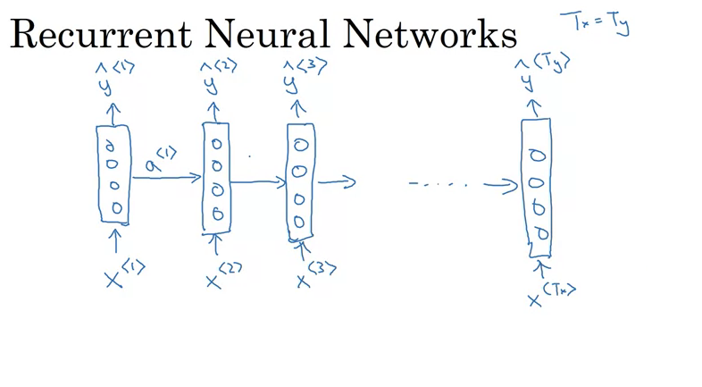
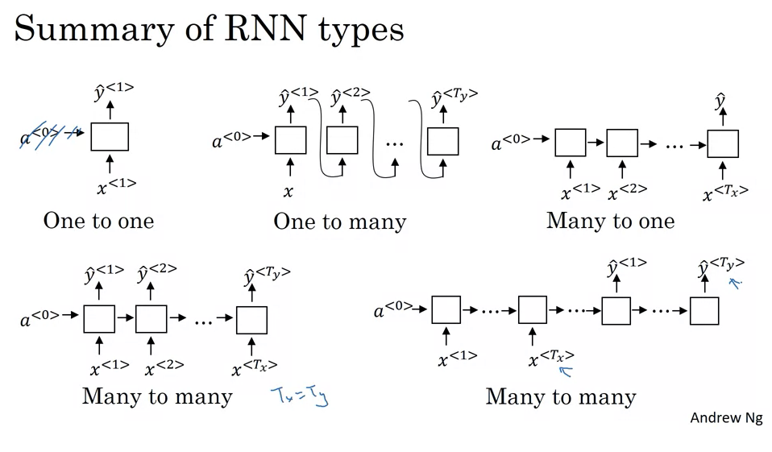
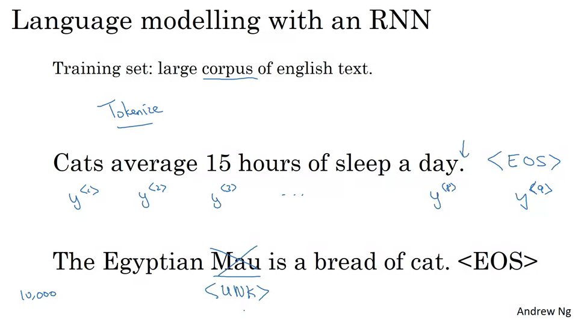
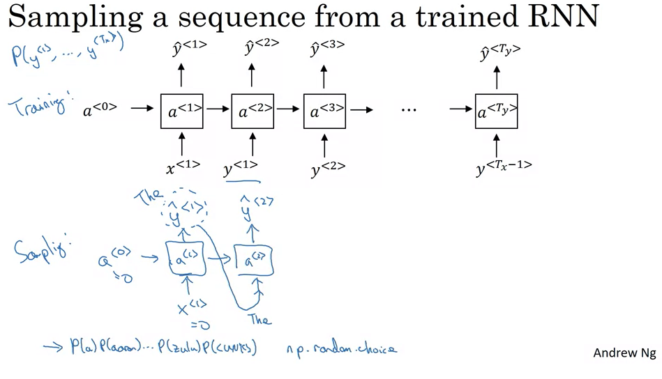
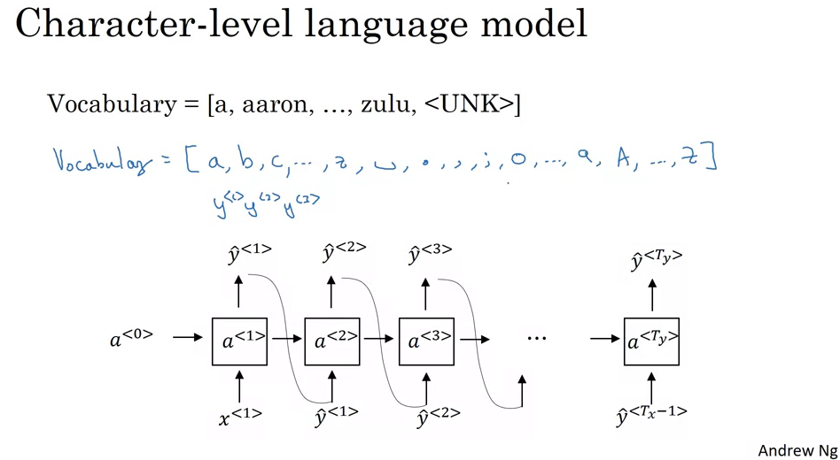

Coursera-DL • Sequence Models
- Recurrent Neural Networks
- Sequence Models: Named-Entity Recognition Use-case
- Recurrent Neural Network Model
- Backpropagation in Recurrent Neural Networks (RNNs)
- Exploring Different RNN Architectures
- Building a Language Model using RNNs
- Gated Recurrent Unit (GRU)
- Long Short-Term Memory (LSTM)
- Bidirectional RNNs (BRNNs)
- Deep RNNs
- Introduction to Word Embeddings in NLP
- Word embeddings more detail
- Word Embeddings and Algorithms
- Word2Vec
- Negative Sampling
- GloVe
- Sentiment Classification using Word Embeddings
- Sequence-to-Sequence Models and Their Applications
- Picking the most likely sentence
- BLEU Score for Evaluating Machine Translation:
- Attention intuition
- Attention model
- Speech Recognition Systems (Sequence-to-Sequence Models)
- Trigger Word Detection Systems
Recurrent Neural Networks
- Recurrent neural networks have been proven to perform extremely well on temporal data. They have several variants including LSTMs, GRUs and Bi-directional LSTMs.
Why sequence models
- Sequence Models like RNN and LSTMs have greatly transformed learning on sequences in the past few years.
- Examples of sequence data in applications:
- Speech recognition (sequence to sequence):
- X: wave sequence
- Y: text sequence
- Music generation (one to sequence):
- X: nothing or an integer
- Y: wave sequence
- Sentiment classification (sequence to one):
- X: text sequence
- Y: integer rating from one to five
- DNA sequence analysis (sequence to sequence):
- X: DNA sequence
- Y: DNA Labels
- Machine translation (sequence to sequence):
- X: text sequence (in one language)
- Y: text sequence (in other language)
- Video activity recognition (sequence to one):
- X: video frames
- Y: label (activity)
- Name entity recognition (sequence to sequence):
- X: text sequence
- Y: label sequence
- Can be used by seach engines to index different type of words inside a text.
- Speech recognition (sequence to sequence):
- All of these problems with different input and output (sequence or not) can be addressed as supervised learning with label data X, Y as the training set.
Sequence Models: Named-Entity Recognition Use-case
- Motivation:
- Create a sequence model to detect names in sentences, e.g., “Harry Potter and Hermione Granger invented a new spell”.
- Characters are from the Harry Potter series by J.K. Rowling.
- This is a problem called Named-entity recognition (NER).
- Uses: Search engines employ NER to index names, places, times, etc., in news articles.
- Given input x, you want an output y to identify person’s names in the sentence.
- Representation:
- For the mentioned sentence, there’s a 9-word sequence.
- Each word position is indexed as \(X^{<1>}, X^{<2>}, ...\).
- Use \(X_t\) to index positions in the middle of sequences. Here, t represents temporality.
- Similarly, the output positions are indexed as \(y^{<1>}, y^{<2>}, ...\).
- \(T_x\) denotes the length of the input sequence. \(T_y\) denotes the length of the output sequence. They can be different.
- To reference the t-th element in the sequence of the i-th training example: \(X^{<t>(i)}\).
- Different examples in the training set can have different lengths.
- NLP and Vocabulary:
- First major step into Natural Language Processing (NLP).
- Need to decide on the representation of words in sequences.
- Use a Vocabulary or Dictionary:
- Lists words for representations, e.g., “a”, “Aaron”, “and”, “Harry”, “Potter”, “Zulu”.
- Words are indexed, e.g., “Harry” is word 4075.
- Example: Dictionary of 10,000 words (small for modern NLP, with typical sizes being 30,000 to 50,000 or more).
- Use One-Hot Representations:
- A word like “Harry” is represented as a vector with all zeros except a “1” at position 4075.
- Each word in the sentence gets transformed into a 10,000-dimensional vector (for a vocabulary of 10,000 words).
- Handling Unknown Words:
- Use a token called “Unknown Word” or UNK for words not in the dictionary. More details on this will be provided later.
- Summary:
- Established notation for sequence data for both x and y.
- Next step: Describe Recurrent Neural Networks (RNN) to learn the mapping from X to Y.
Recurrent Neural Network Model


- Problems with Standard Neural Networks for Sequences:
- Input and output lengths can vary across different examples.
- Features learned at one position of the text aren’t shared across other positions.
- Introduction to RNNs:
- RNNs scan data from left to right.
- Each time step takes an input and produces an output while passing on information (activation) from the previous time step.
- RNNs share parameters across time steps.
- The initial activation (usually denoted as \(a_0\)) is often a vector of zeros.
- Unrolled vs. Looped Diagrams:
- The unrolled version displays each time step of the RNN sequentially.
- The looped version shows the RNN as a compact loop, which might be seen in some research papers. However, the unrolled version is clearer for understanding the flow of information.
- Information Flow in RNNs:
- An RNN can use information from earlier steps to make predictions in the present step.
- However, it doesn’t have access to future information in the sequence, which might be necessary for making accurate predictions. This limitation is addressed later with bi-directional RNNs.
- Calculations in an RNN:
- Forward propagation is where the activation \(a_t\) is computed using weights \(W_{aa}\), \(W_{ax}\), the previous activation \(a_{t-1}\), and the current input \(x_t\).
- The output \(y_{hat}\) is then calculated using \(a_t\), weights \(W_{ya}\), and biases.
- Notational Simplification:
- To simplify the equations, the video merges the weight matrices \(W_{aa}\) and \(W_{ax}\) into a single matrix \(W_a\), and stacks the activations and inputs into a single vector.
- This simplified notation makes it easier to build and understand more complex models.
Backpropagation in Recurrent Neural Networks (RNNs)
- Introduction:
- This tutorial delves into how backpropagation functions in an RNN.
- Although most programming frameworks handle backpropagation automatically, understanding its mechanics is beneficial.
- Forward Propagation in RNNs:
- For forward propagation, activations are computed from left to right in a sequence.
- Starting with an input sequence \(x_1, x_2, \dots, x_{tx}\):
- Using \(x_1\) and initial activation \(a_0\), the activation \(a_1\) is computed.
- Subsequent activations are computed similarly, using the previous activation and the current input. E.g., \(a_2\) is computed using \(a_1\) and \(x_2\), and so on.
- The same parameters \(W_a\) and \(b_a\) are used to compute all activations across timesteps.
- Predictions \(\)\hat{y}\(_1,\)\hat{y}\(_2, \dots\) are then computed based on these activations using parameters \(W_y\) and \(b_y\).
- Loss Function:
- An element-wise loss is defined for each word prediction.
- If a word in the sequence represents a person’s name, \(y_t = 1\).
- The standard logistic regression loss (cross entropy loss) is used for each timestep’s prediction.
- The overall loss, \(L\), for the entire sequence is the sum of the losses over all timesteps.
- Backpropagation:
- Backpropagation computes in the opposite direction of forward propagation.
- Messages or gradients are passed backward through the computation graph, from the loss back to the inputs.
- The most significant recursive calculation happens from right to left, leading to the term “backpropagation through time” (BPTT).
- The term “through time” is derived from the notion of moving backward in sequence, as if traveling back in time.
- Conclusion:
- Understanding BPTT helps in grasping how RNNs update and learn their parameters.
- RNN architectures can vary based on tasks where input and output sequences may not always be of the same length.
- Upcoming content will explore a broader range of RNN architectures and their applications.
Exploring Different RNN Architectures

- Recurrent Neural Networks (RNNs) have a variety of architectures to cater to different types of problems. These architectures are inspired by how input sequences (denoted as
Tx) and output sequences (Ty) relate to each other. Here’s a detailed overview:
- Many-to-Many with Equal Lengths (Tx = Ty):
- Description: Both input and output sequences have the same length.
- Example: Name entity recognition where for each word input, the RNN outputs a classification.
- Working: For every word or element input into the RNN, there’s a corresponding output.
- Many-to-One:
- Description: The RNN takes a sequence of data as input and produces a single output.
- Example: Sentiment analysis. A movie review (a sequence of words) might be input, and the output could be a sentiment score or a binary value indicating positive/negative sentiment.
- Working: The entire sequence is read, and only after processing the last element does the RNN produce an output.
- One-to-One:
- Description: This is the traditional neural network architecture. Neither the input nor the output are sequences.
- Usage: For problems where the input-output relationship doesn’t involve sequences.
- Working: A single input produces a single output, and there’s no need for the recurrent structure here.
- One-to-Many:
- Description: From a single input, the RNN produces a sequence.
- Example: Music generation. An RNN might take a genre or a starting note as input and then produce a sequence of notes as output.
- Working: The RNN takes the initial input and then starts producing a sequence, often using the previous output as an input for generating the next item in the sequence.
- Many-to-Many with Different Lengths (Tx ≠ Ty):
- Description: Both input and output are sequences, but they aren’t required to have the same length.
- Example: Machine translation, like translating a French sentence to English. The number of words in the two sentences can vary.
- Working: The RNN first acts as an “encoder”, reading and internalizing the input sequence. Then, it switches roles to become a “decoder”, producing the output sequence.
- Attention-Based Architectures:
- Description: A more advanced architecture not easily classified into the above categories.
- Usage: Useful for problems where certain parts of the input sequence are more relevant for producing a particular part of the output sequence.
- In essence, these architectures showcase the versatility of RNNs. By adjusting the structure, one can tailor the RNN to suit a myriad of problems, from generating music to translating languages. However, it’s important to note that certain nuances, especially in sequence generation, require careful handling, a topic to be delved into in subsequent discussions.
Building a Language Model using RNNs

- Introduction to Language Modeling
- A fundamental task in natural language processing (NLP) is language modeling.
- Its essence lies in determining the probability of a sentence occurring in a real-world context.
- It aids in differentiating between similar sounding sentences, for instance, distinguishing between “apple and pair salad” and “apple and pear salad”.
- Role in Speech Recognition
- In speech recognition systems, even if two sentences sound the same, the system uses a language model to decide which sentence is more probable based on prior knowledge.
- Definition of a Language Model
- A language model predicts the probability of a particular sentence. For instance, if you read a random newspaper article, email, or webpage, or hear a conversation, the language model predicts the likelihood of encountering a specific sentence.
- It plays a vital role in both speech recognition and machine translation systems.
- How does an RNN Language Model work?
- The basic task of a language model is to evaluate the probability of a sequence of words.
- To build such a model using an RNN, you start with a training set comprising a large corpus of text.
- The text is tokenized, meaning each word is converted to an index or vector representation. An ‘End Of Sentence’ (EOS) token can also be added to signify the end of sentences.
- Words not in the established vocabulary can be represented using an ‘unknown’ (UNK) token.
- The RNN model uses this tokenized sequence to predict the next word based on previous words. Each step of the RNN tries to predict the next word in the sequence.
- Training the RNN for Language Modeling
- The cost function measures the discrepancy between the predicted word and the actual word at every time step.
- By training the RNN using this cost function, the model can predict the probability of the next word in a sentence.
- Application of the RNN Language Model
- Given any starting sequence of words, the model can predict the probability of the subsequent word.
- This property can be used to compute the probability of an entire sentence by multiplying the probabilities of each word, given the previous words.
- This basic structure forms the foundation of training a language model using an RNN.
Generating Sequences from Trained Sequence Models:

- Understanding Sequence Models:
- Principle: A sequence model learns the probability distribution of various sequences of words.
- Utility: Post-training, you can generate (or sample) new sequences to informally understand what the model has learned.
-
Step-by-step Sequence Generation:
- Initialization:
- Begin with initial conditions, denoted by \(x_1 = 0\) and \(a_0 = 0\), which can be thought of as the starting state of the sequence.
- Sampling the First Word:
- At the first timestamp, the network uses a softmax function to calculate probabilities for every word in the vocabulary to be the first word.
- You can then randomly select the first word based on this distribution.
- Iterative Sequence Building:
- The word chosen in the previous step is then used as input for the next timestamp.
- The network predicts the next word based on the context provided by the previous words.
- This process is repeated, with each selected word being used as context for the subsequent word prediction.
- Stopping the Generation:
- The generation can be halted using various criteria such as:
- Generating an end-of-sentence (EOS) token.
- Reaching a pre-defined word count.
- The generation can be halted using various criteria such as:
- Initialization:
-
Dealing with Unknown Words:
- The Issue: The model may sometimes produce an “unknown word token”, especially if the word wasn’t part of the training vocabulary.
- Possible Solutions:
- Resample: Whenever an unknown word is generated, simply resample until a known word is produced.
- Retain: Keep the unknown word in the generated sequence, representing words that were not part of the training data.
- Character vs. Word Level RNNs:

- Character Level RNNs:
- Definition: The vocabulary consists of individual characters, including alphabets, digits, punctuation, and spaces.
- Advantages:
- Can represent any word, including those not seen during training.
- No “unknown word token” issue.
- Drawbacks:
- Longer sequences required to represent even short sentences.
- Less effective at capturing long-range contextual dependencies.
- High computational cost.
- Word Level RNNs:
- Definition: The vocabulary consists of entire words.
- Advantages:
- More efficient and better at capturing long-range dependencies.
- Shorter sequences.
- Drawbacks:
- Can’t represent words not in the training vocabulary, leading to “unknown word tokens”.
- Character Level RNNs:
- Sample Outputs:
- News Model: When trained on news articles, the RNN can generate sentences that, while not always grammatically correct, resemble news headlines.
- Shakespearean Model: When trained on Shakespearean text, the RNN outputs phrases that are reminiscent of Shakespeare’s style.
- Looking Ahead:
- The basic RNN, while powerful, has challenges in training, particularly with long sequences due to the vanishing gradient problem.
- Advanced models like the GRU (Gated Recurrent Unit) and LSTM (Long Short-Term Memory) provide solutions to these challenges.
Detailed Notes on RNNs, Vanishing Gradients, and Long-Range Dependencies:
- Recurrent Neural Networks (RNNs) Overview:
- Applications: Name entity recognition, language modeling.
- Training Mechanism: Uses backpropagation to train.
- Vanishing Gradient Problem in Basic RNNs:
- Challenge: Basic RNNs struggle with vanishing gradients, limiting their ability to capture long-term dependencies.
- Example: In the sentence “The cat, which already ate… was full”, the singularity of “cat” affects the usage of “was” much later in the sequence. Basic RNNs struggle with such long-range dependencies.
- Analogy with Deep Feedforward Networks:
- Vanishing Gradients in Deep Nets: Very deep networks (e.g., 100 layers) face challenges where gradients at the output layer struggle to influence the initial layers.
- RNN Similarity: In an RNN, the problem is analogous. Gradients from later time steps find it difficult to influence earlier steps due to the sequence’s depth.
- Implications:
- Local Influence: Basic RNNs are heavily influenced by nearby inputs. An output at a particular time step is primarily influenced by recent inputs.
- Long-range Dependencies: Basic RNNs find it hard to maintain information from earlier time steps to influence later steps.
- Exploding Gradients:
- Problem: In addition to vanishing gradients, RNNs can face exploding gradients where gradients increase exponentially.
- Impact: Exploding gradients can be catastrophic. Parameters can blow up, leading to numerical overflows (“NaNs” or not-a-numbers in computations).
- Solution: Gradient Clipping:
- If the gradient vector exceeds a certain threshold, it is rescaled.
- Gradient Clipping ensures that the gradient remains below a predefined maximum value.
- Summary:
- Depth Analogy: An RNN processing data over 1,000 time steps can be analogized to a 1,000-layer neural network.
- Gradient Issues: Both vanishing and exploding gradients can be problems in deep networks and RNNs.
- Immediate Solution: Exploding gradients can be managed with gradient clipping.
Gated Recurrent Unit (GRU)
- The GRU is a type of recurrent neural network (RNN) architecture. Standard RNNs can have difficulty in learning and retaining long-range dependencies because of issues like the vanishing gradient problem. The GRU is designed to combat this issue, allowing for the efficient modeling of long-term dependencies.
- Basic Structure:
- The GRU has two main components:
- Reset Gate (r): This gate decides how much of the past information to discard.
- Update Gate (u): It determines how much of the current state should be updated with the new candidate state.
- The GRU has two main components:
- Mathematical Expressions:
- Given a sequence of inputs \(x_1, x_2, ... x_t\), the GRU updates its states using the following transformations:
- Reset gate:
\(r_t = \sigma(W_r \cdot [h_{t-1}, x_t] + b_r)\)
- where \(\sigma\) is the sigmoid function, \(W_r\) is the weight matrix for the reset gate, and \(b_r\) is the corresponding bias.
- Update gate:
\(u_t = \sigma(W_u \cdot [h_{t-1}, x_t] + b_u)\)
- where \(W_u\) is the weight matrix for the update gate, and \(b_u\) is the corresponding bias.
- Candidate hidden state:
\(\tilde{h}_t = \tanh(W \cdot [r_t \odot h_{t-1}, x_t] + b)\)
- where \(W\) is the weight matrix, \(b\) is the bias, and \(\odot\) denotes element-wise multiplication. This state is a filtered version of the past state.
- Final hidden state:
\(h_t = (1 - u_t) \odot h_{t-1} + u_t \odot \tilde{h}_t\)
- This is a linear interpolation between the previous state and the candidate state, guided by the update gate.
- Reset gate:
\(r_t = \sigma(W_r \cdot [h_{t-1}, x_t] + b_r)\)
- Given a sequence of inputs \(x_1, x_2, ... x_t\), the GRU updates its states using the following transformations:
- GRU’s Functioning:
- The reset gate (r) determines how much of the past information to forget. A value closer to 0 means “forget more,” while a value closer to 1 means “remember more.”
- The update gate (u) helps the model decide the amount of the new information to store. If the value of u is close to 0, the old content in the memory cell is retained, and if it’s closer to 1, the new content \(\tilde{h}_t\) is considered.
- The candidate state \(\tilde{h}_t\) is like a provisional state. It’s a combination of the previous state and the current input. The reset gate decides how much of the past state to consider while making this new candidate.
- The final hidden state \(h_t\) is a mix of the previous state and the candidate state. The degree to which each contributes is decided by the update gate.
- Benefits of GRU:
- Mitigating Vanishing Gradient Problem: Thanks to the gating mechanisms, GRUs can retain long-term dependencies, making them less susceptible to the vanishing gradient problem.
- Flexibility in Memory: With the help of reset and update gates, GRUs can selectively remember or forget information, making them adept at handling sequences.
- Simplified LSTM: GRU can be seen as a simplified version of the LSTM (Long Short-Term Memory) as it uses two gates compared to LSTM’s three. This often leads to faster training times, although at the cost of expressiveness.
- GRUs provide an elegant solution to some of the RNN’s limitations, making them a popular choice for various sequential tasks in machine learning, from natural language processing to time-series forecasting.
Long Short-Term Memory (LSTM)
- LSTMs, or Long Short-Term Memory networks, are a type of RNN that can remember information for long periods. They’re particularly suited for tasks that require understanding data over prolonged sequences. While GRUs were a simplification of LSTMs, LSTMs have historically been more popular due to their richer structure.
- Structure & Mechanism:
- LSTMs have three gates:
- Forget Gate (γ_f): Determines how much of the past information the cell should throw away or keep.
- Input/Update Gate (γ_u): Updates the cell state with new information.
- Output Gate (γ_o): Determines the amount of the current cell state to output to the activation.
- LSTMs have three gates:
- Mathematical Expressions:
- Given an input sequence \(x_t\), the LSTM updates its state as follows:
- Forget Gate: \(\gamma_f = \sigma(W_f \cdot [a_{t-1}, x_t] + b_f)\)
- Input/Update Gate: \(\gamma_u = \sigma(W_u \cdot [a_{t-1}, x_t] + b_u)\)
- Candidate State (similar to the GRU’s): \(\tilde{c}_t = \tanh(W_c \cdot [a_{t-1}, x_t] + b_c)\)
- Update Cell State:
\(c_t = \gamma_u \odot \tilde{c}_t + \gamma_f \odot c_{t-1}\)
- Here, instead of using a combination like in the GRU, the LSTM uses two gates: the forget gate decides what to forget from the previous state, and the update gate determines what new information to add.
- Output Gate: \(\gamma_o = \sigma(W_o \cdot [a_{t-1}, x_t] + b_o)\)
- Final Activation: \(a_t = \gamma_o \odot \tanh(c_t)\)
- where:
- \(\odot\) is element-wise multiplication.
- \(\sigma\) is the sigmoid function.
- \(\tanh\) is the hyperbolic tangent function.
- \(W\) represents weight matrices for different gates.
- \(b\) represents bias vectors for different gates.
- Given an input sequence \(x_t\), the LSTM updates its state as follows:
- Variations and Extensions
- Peephole Connection: In standard LSTMs, gate values are dependent on the previous activation \(a_{t-1}\) and the current input \(x_t\). In peephole connections, the gate values also take into account the previous cell state \(c_{t-1}\), allowing the cell state to influence the gates directly. This can sometimes improve performance, depending on the specific task.
- When to use LSTMs vs. GRUs?
- There isn’t a definitive answer, as the effectiveness varies based on the problem and dataset:
- LSTM:
- More parameters and thus computationally more intensive.
- Historically proven with a plethora of successful applications.
- Has more flexibility due to three gates, which might capture intricate patterns better.
- GRU:
- Simpler with fewer parameters, which might lead to faster training.
- Might be easier to scale to bigger problems because of its simplicity.
- Gaining momentum in recent times and is often considered a good first choice.
- LSTM:
- There isn’t a definitive answer, as the effectiveness varies based on the problem and dataset:
- In general, if you’re unsure which to choose, starting with an LSTM is a good bet because of its historical performance. However, if computational efficiency or training speed is a concern, trying a GRU is also a reasonable approach.
- LSTMs, with their intricate structure and multiple gates, provide a powerful mechanism to capture long-range dependencies in sequences. Whether it’s language modeling, time-series forecasting, or many other sequential tasks, LSTMs (and their simpler counterparts, GRUs) have significantly advanced the state of the art in sequence modeling.
Bidirectional RNNs (BRNNs)
- Motivation:
- In tasks like named entity recognition, sometimes to predict a certain word’s label, you need context from both past and future tokens. For instance, to decide if “Teddy” refers to a teddy bear or Teddy Roosevelt, context after the word might be helpful.
- How BRNNs Work:
- While traditional RNNs move in a forward direction through a sequence, BRNNs have two sets of hidden layers: one that moves forward and another that moves backward.
- Imagine a sequence \(X_1, X_2, X_3, ... X_t\).
- The forward RNN captures information from \(X_1\) to \(X_t\).
- The backward RNN captures information from \(X_t\) to \(X_1\).
- For each position \(t\), both the forward and backward hidden states are passed to generate the output \(Y_t\).
- Advantages:
- Allows the network to have information from both past and future states, which is often valuable in tasks where context plays a significant role.
- Particularly beneficial for many Natural Language Processing (NLP) tasks. A combination of BRNN with LSTM blocks is a popular choice.
- Drawbacks:
- The entire sequence is required before predictions can be made. This is not suitable for real-time predictions, such as real-time speech recognition.
- Applications:
- Named Entity Recognition, other NLP tasks where full sequence context is beneficial.
- However, modifications may be needed for applications that require real-time outputs, like speech recognition.
- Variants:
- The blocks in BRNN can be standard RNNs, GRUs, or LSTMs. The choice depends on the specific problem and data.
Deep RNNs
- Introduction:
- Deep RNNs stack multiple layers of RNNs together, aiming to capture more complex patterns within sequences.
- Relation to Regular Neural Networks:
- Just as in a regular deep neural network, where we have multiple layers (like input, hidden layers, and output), in deep RNNs, multiple layers of recurrent units are stacked on top of each other.
- Notation:
- \(a[l]<t>\) is used to represent the activations.
- \(l\) indicates the layer.
- \(t\) indicates the time step.
- Computation in Deep RNNs:
- For instance, for \(a[2]<3>\), it will consider the activations from the previous time step in the same layer, \(a[2]<2>\), and the activations from the previous layer at the same time step, \(a[1]<3>\).
- Depth in RNNs vs Regular Neural Networks:
- Unlike regular deep networks which might have hundreds of layers, deep RNNs usually don’t go that deep. Even three layers can be considered “deep” for RNNs.
- This is due to the complexity in the temporal dimension which can make these networks vast.
- Variations:
- RNN layers can be stacked vertically (in terms of depth) and connected horizontally (across time steps).
- After the RNN layers, there can be deep fully connected layers for the prediction at each time step without temporal connections.
- Block Choices:
- The blocks in deep RNNs can be standard RNNs, GRUs, or LSTMs.
- There are also bidirectional versions of deep RNNs.
- Computational Implications:
- Deep RNNs are computationally intensive.
- Due to the inherent complexity of managing sequences in time, you don’t generally see as many layers in deep RNNs as in traditional deep networks.
- Summary:
- With basic RNNs, GRUs, LSTMs, bidirectional RNNs, and deep RNNs, there’s a wide range of models available for sequence modeling, each with its own advantages and use-cases.
Introduction to Word Embeddings in NLP
- Context & Motivation:
- Previously, the primary focus was on RNNs, GRUs, and LSTMs.
- This week’s focus is on Natural Language Processing (NLP), which has seen a transformation due to deep learning techniques.
- One crucial technique is word embeddings, allowing algorithms to capture word relationships and similarities.
- **Traditional Word Representation: **
- Words have historically been represented using one-hot vectors.
- A dictionary is constructed, and each word is given a unique vector with a 1 at its corresponding position and 0s everywhere else.
- Problem: This representation does not capture the relationship or similarity between words.
- Desire for Featurized Representation:
- A proposed solution is to represent words using features rather than isolated vectors.
- Examples of possible features: gender, royalty, age, type (e.g., food or not), etc.
- The goal is to learn such representations such that similar words have similar feature vectors.
- High-Dimensional Embeddings:
- Instead of just a few features, words can be embedded in a high-dimensional space, e.g., 300 dimensions.
- These embeddings allow for richer representation and better generalization across words.
- Words like “apple” and “orange” would have similar embeddings due to their shared features (both being fruits, for instance).
- Visualizing Embeddings:
- While embeddings can have hundreds of dimensions, they are sometimes visualized in 2D or 3D using techniques like t-SNE.
- Visualization often shows that similar words cluster together.
- What is an Embedding?
- Embedding refers to mapping each word to a point in a high-dimensional space.
- The term “embedding” signifies the positioning of a word in this space based on its learned features.
- Significance of Word Embeddings:
- Word embeddings revolutionized NLP by allowing algorithms to understand word relationships and similarities.
- This representation provides a robust foundation for many NLP tasks.
Word embeddings more detail
-
Context and Generalization: The video uses the example of named entity recognition to highlight how word embeddings can help generalize from one scenario to another. If the algorithm has seen the sentence “Sally Johnson is an orange farmer” during training, it can generalize to the sentence “Robert Lin is an apple farmer” because it knows that “orange” and “apple” are similar, thanks to word embeddings. The real power of word embeddings is demonstrated by the ability of the algorithm to recognize that “Robert Lin is a durian cultivator” also refers to a person, even if the words “durian” and “cultivator” are rarely seen during training.
-
Learning Word Embeddings: Word embeddings can be learned by examining large amounts of unlabeled text data, often from the internet. This helps in understanding relationships between words, such as “orange” and “durian” being fruits or “farmer” and “cultivator” being related to cultivation.
-
Transfer Learning: The video emphasizes the concept of transfer learning, which involves taking knowledge learned from one task and applying it to another. In the context of word embeddings, this means using embeddings learned from a large text corpus and applying them to a different NLP task with a smaller dataset.
-
Fine-tuning Embeddings: Once the embeddings are applied to a new task, they can optionally be fine-tuned using the data from that task. This is especially beneficial if the new task has a sizeable dataset.
-
Applications of Word Embeddings: Word embeddings are beneficial for many NLP tasks, such as named entity recognition, text summarization, co-reference resolution, and parsing. However, for tasks like language modeling and machine translation with large dedicated datasets, the advantage of word embeddings might be reduced.
-
Comparison with Face Encoding: The video draws a parallel between word embeddings and the face encoding techniques used in image recognition. While the terms “encoding” and “embedding” are used interchangeably, the application differs. In face recognition, the network learns an encoding for any face image, whereas in word embeddings, a fixed vocabulary of words is used, and embeddings for these fixed words are learned.
- In summary, word embeddings are dense vector representations of words that capture semantic relationships between them. They allow NLP algorithms to generalize better across different contexts, enabling improved performance even with smaller labeled datasets.
Word Embeddings for Analogy Reasoning
- Word embeddings are crucial in Natural Language Processing (NLP) and they have the fascinating ability to reason through analogies.
-
Analogies are not just for amusement; understanding them can provide insights into the capabilities of word embeddings.
-
Understanding Word Embeddings Through Analogies:
- Consider the analogy “man is to woman as king is to what?”. Most people would respond with “queen”, but how can an algorithm figure this out using word embeddings?
- Words can be represented as vectors. For example, “man” could be represented by a vector named
e_man, “woman” ase_woman, and so on. - By analyzing the difference between the vectors (like
e_man - e_woman), we can find a pattern. In this case, the difference between “man” and “woman” vectors might primarily represent gender. Similarly, the difference between “king” and “queen” vectors would also represent gender. - The algorithm can then use this difference to predict the missing word in the analogy. It computes the difference and searches for a word whose embedding closely matches the expected vector difference.
-
Influential Work on Analogies and Word Embeddings:
- Tomas Mikolov, Wen-tau Yih, and Geoffrey Zweig first pointed out the potential of word embeddings in analogy reasoning.
- Their work has been instrumental in helping the NLP community understand the capabilities and workings of word embeddings.
-
Visualizing Word Embeddings:
- Even though word embeddings often have hundreds of dimensions (often 300), visualization tools like t-SAE can map them into a 2D space.
- However, this visualization may not always preserve the relationships or distances between words due to the non-linear transformations applied.
-
Measuring Similarity Between Vectors:
- To determine how close two vectors are, a similarity function is used.
- The most common similarity function is the “cosine similarity”, which calculates the cosine of the angle between two vectors. It helps determine how similar two vectors (or word embeddings) are.
-
Remarkable Findings:
- Word embeddings can capture a wide range of analogies, such as:
- Man to Woman :: Boy to Girl (capturing gender difference).
- Ottawa to Canada :: Nairobi to Kenya (capturing capital-city relationships).
- Big to Bigger :: Tall to Taller (capturing comparative degrees).
- Yen to Japan :: Ruble to Russia (capturing currency-country relationships).
- Word embeddings can capture a wide range of analogies, such as:
-
Conclusion:
- Word embeddings have the incredible ability to capture semantic relationships in data.
- While analogy reasoning itself might not be a standalone application, it provides deep insights into the strength and capabilities of word embeddings.
- The next step in understanding word embeddings is exploring how they are learned from data.
Word Embeddings and the Embedding Matrix
-
Vocabulary: Let’s assume we have a vocabulary of 10,000 words (or 10,001 if you include an “unknown” word token). This vocabulary could range from common words like “A”, “Orange” to less common ones like “Zulu”.
-
Embedding Matrix (E): The embedding matrix is a representation of our vocabulary in a dense vector space. If each word is represented as a 300-dimensional vector, and there are 10,000 words, the embedding matrix will be of size 300 x 10,000.
-
One-hot Vectors: For any word in the vocabulary, its representation as a one-hot vector will have a dimension of 10,000 (equal to the vocabulary size). For instance, if “Orange” is the 6,257th word in the vocabulary, its one-hot vector will have a “1” at the 6,257th position and “0”s everywhere else.
-
Extracting Word Embeddings: Multiplying the embedding matrix \(E\) with the one-hot vector of a word will extract the column corresponding to that word in \(E\). This column is essentially the word’s embedding. Mathematically, \(E \times o_{6257} = E_{6257}\). Here, \(E_{6257}\) is the 300-dimensional embedding of the word “Orange”.
-
Efficiency Concern: In practice, carrying out this matrix multiplication isn’t efficient because the one-hot vector is large and sparse (mostly zeros). Instead of performing a matrix-vector multiplication, you’d simply “lookup” the relevant column in the matrix. This is more computationally efficient and is typically how embedding layers in neural network libraries (like Keras) function.
-
Goal: The primary goal in learning word embeddings is to learn the embedding matrix \(E\). Initially, \(E\) is often populated with random values, and during training, these values are updated to better capture semantic meanings of words.
-
Next Steps: Once you have established this foundation, the next step is to discuss specific algorithms or techniques to learn this embedding matrix \(E\), such as Word2Vec, GloVe, etc.
- The provided explanation offers a foundational understanding of how word embeddings work in practice. By understanding the relationship between one-hot vectors, the embedding matrix, and word vectors, one can appreciate how dense representations of words are obtained from sparse one-hot vectors.
Word Embeddings and Algorithms
- Introduction and Evolution of Algorithms:
- Word embeddings can be learned through various algorithms.
- Initially, complex algorithms were employed for this task.
- However, with time, simpler yet effective algorithms were developed.
- Starting with simpler algorithms might appear mystifying due to their simplicity.
- Therefore, it’s essential to begin understanding from the complex and gradually transition to the simpler ones for better clarity and intuition.
- Neural Language Model – The Foundation:
- Imagine building a model that predicts the next word in a sentence, e.g., given “I want a glass of orange”, predict the next word.
- Each word is represented by a unique index in the vocabulary.
- Credit for the development of these concepts goes to notable researchers like Yoshua Bengio and others.
- Step-by-step Guide to Building the Model:
- For any word, say “I”, a one-hot vector is created which is essentially a long vector with one value of ‘1’ at the position representing the word and ‘0’ everywhere else.
- This one-hot vector is multiplied by a matrix (E) to obtain the word’s embedding.
- This process is repeated for every word in the sentence.
- After obtaining embeddings, these are fed into a neural network.
- The goal is to predict the next word from a vocabulary of potential words using a softmax layer.
- The model adjusts based on training data. For instance, if “juice” often comes after “I want a glass of orange”, the model will learn this.
- Handling Different Sentence Lengths:
- Due to varying sentence lengths, it’s not feasible to always input every word.
- A common approach is to use a fixed number of previous words (like the last four) to predict the next word.
- This ensures consistent input size and enables the model to process sentences of any length.
- Importance of Word Embeddings:
- Word embeddings ensure words appearing in similar contexts have similar representations.
- For instance, since “apple” and “orange” can both be followed by “juice”, their embeddings will be somewhat similar.
- This similarity ensures that the algorithm learns effectively from the data.
- Exploring Different Contexts for Predictions:
- Apart from using the last few words as context, there are alternative ways to define context:
- Using both preceding and succeeding words.
- Using just the immediate previous word.
- Using a random nearby word (Skip-Gram model).
- Apart from using the last few words as context, there are alternative ways to define context:
-
The main goal defines the choice of context. If it’s language modeling, preceding words are natural. However, for word embeddings, various contexts can yield meaningful results.
- Conclusion:
- The primary idea is using a context to predict target words, aiding in generating word embeddings.
- Simpler algorithms and models, like Word2Vec, can still achieve this effectively.
Word2Vec
- Introduction
- The video introduces Word2Vec, a simple and more efficient algorithm for learning word embeddings compared to other neural language models.
- Major contributors to the ideas in Word2Vec include Tomas Mikolov, Kai Chen, Greg Corrado, and Jeff Dean.
- Skip-gram Model
- The skip-gram model creates supervised learning problems using context-to-target pairs from sentences.
- Rather than using a fixed number of words as context, a random word is selected from the sentence.
- Another random word, within a specified window (e.g., +/- 5 or 10 words), is selected as the target.
- The objective isn’t necessarily to perform perfectly on this problem but to use it as a method to learn good word embeddings.
- Model Details
- Typically, a vocabulary of about 10,000 words is used, though sometimes it exceeds a million.
- Words, such as “orange” or “juice,” are represented as one-hot vectors based on their position in the vocabulary.
- The embedding matrix, when multiplied by the one-hot vector, produces the embedding for the word.
- The network structure involves the embedding fed to a softmax unit, which then outputs \(\hat{y}\).
- Softmax Model
- The softmax model calculates the probability of various target words given an input context word.
- The loss function used is the negative log likelihood, suitable for softmax where the target word is represented as a one-hot vector.
- Computational Concerns
- The primary issue with the skip-gram model is computational speed due to the softmax step.
- Calculating the softmax requires summing over the entire vocabulary, which is computationally expensive, especially for large vocabularies.
- Solutions to the Computational Problem
- Hierarchical softmax classifier: Instead of classifying among all words at once, a binary tree of classifiers is used to narrow down choices.
- This reduces the computational cost from linear to logarithmic with respect to vocabulary size.
- The tree’s structure can be optimized so that more frequent words are near the top, reducing traversal time for common words.
- Sampling Context Words
- For training, context words aren’t always chosen uniformly from the corpus.
- Some words appear more frequently than others, and sampling uniformly might bias the training towards these common words.
- Various heuristics balance sampling common and less common words to ensure that embeddings are learned for both.
- CBOW Model
- Besides the skip-gram model, the original Word2Vec paper also introduced the Continuous Bag of Words (CBow) model.
- The CBow model predicts a middle word from its surrounding context, and it has its own advantages and disadvantages.
Negative Sampling
- New Supervised Learning Problem:
- Negative Sampling presents a new supervised learning problem. For any given pair of words (like “orange” and “juice”), the aim is to predict if they form a context-target pair. “Orange” and “juice” would be a positive example (labeled 1), while “orange” and “king” is considered a negative example (labeled 0).
- Generating Data:
- Positive Example: Start by picking a context word, and then from a window around that context word, pick a target word.
- Negative Examples: Use the same context word and then pick ‘k’ random words from the vocabulary. Most of these randomly selected words would not be contextually related, hence they are negative samples.
- Choosing k:
- \(k\) represents the number of negative samples to be generated for every positive context-target pair. Recommendations vary based on the size of the dataset. Smaller datasets might benefit from a \(k\) value between 5 to 20, while larger datasets might be more efficient with \(k\) values between 2 to 5.
- Learning Model:
- It essentially models a binary classification problem, aiming to predict if a given pair of words are contextually related (1) or not (0).
- The formula proposed uses the embeddings of the context and target words.
- Visualized as a neural network, instead of a massive Softmax layer, it employs multiple logistic regression classifiers. Only a subset of these classifiers are trained in each iteration, keeping computational costs low.
- The technique gets its name from the fact that for every positive example, several negative samples are generated and used for training.
- Choosing Negative Examples:
- Rather than just randomly picking words, or picking based on empirical frequency (which would over-represent common words like “the”, “and”, etc.), the authors proposed a heuristic: sample words proportionally to the frequency of a word raised to the power of 3/4.
- Negative Sampling provides a computationally efficient method to learn word embeddings. The embeddings learned are of good quality and can be used for various NLP tasks. While it’s feasible to learn embeddings from scratch, there are also pre-trained embeddings available that one can use for quick deployment.
GloVe
- Introduction to GloVe:
- GloVe is another popular word embedding algorithm.
- It was developed by Jeffrey Pennington, Richard Socher, and Chris Manning.
- It differs from Word2Vec and skip-gram models but offers a relatively simple mechanism.
- How GloVe Works:
- GloVe explicitly counts how often two words (i and j) appear near each other in a corpus.
- \(X_{ij}\) represents the number of times word i appears in the context of word j.
- GloVe optimizes an objective that minimizes the difference between the dot product of the embedding vectors for words i and j and the log of \(X_{ij}\). This attempts to make the dot product of embedding vectors mirror the logarithm of their co-occurrence probability.
- Specifics of the Algorithm:
- If \(X_{ij}\) is zero (i.e., the words never appear together), you ignore that term to avoid the undefined log(0).
- To account for words that appear very frequently (like “the” or “is”) or very infrequently (like “durion”), GloVe uses a weighting function, \(F(X_{ij})\), to give the right amount of emphasis to each word pair.
- The roles of \(\theta\) (theta) and \(e\) in the GloVe algorithm are symmetric. After training, for each word, you can take the average of its \(\theta\) and \(e\) vectors to get its final embedding.
- Interpretability Challenge:
- Although we start with the idea that embeddings might capture clear concepts like gender, royalty, age, etc., in practice, the dimensions of embeddings are usually not directly interpretable.
- This is because the learning algorithm might combine these concepts in arbitrary ways across dimensions.
- The dimensions are learned in a way that’s useful for predicting the co-occurrence of words, not necessarily in a way that’s easy for humans to interpret.
- Parallelogram Map for Analogies:
- Despite the potential arbitrary representation in word embeddings, the concept that embeddings can capture relationships (like analogies) still holds. For instance, the relationship “king” - “man” + “woman” = “queen” can be visualized as a parallelogram in the embedding space.
- Applications and Further Steps:
- Word embeddings, whether from GloVe or other algorithms, are foundational in many NLP tasks.
- The next step in the lesson appears to be about using these embeddings for sentiment classification.
Sentiment Classification using Word Embeddings
- Definition and Importance:
- Sentiment classification determines if a text is positive or negative about a subject.
- Vital component in Natural Language Processing (NLP).
- Used in a variety of applications.
- Challenges:
- May not always have extensive labeled training data.
- Word embeddings can assist in building efficient classifiers even with smaller datasets.
- Example:
- Input (X): Text (e.g., “The dessert is excellent”).
- Output (Y): Sentiment (e.g., 4-star review).
- Can monitor comments about products, services, etc.
- Use Case:
- Monitor restaurant reviews or comments on social media.
- Gauge overall sentiment, identify problem areas, or track performance over time.
- Benefit of Word Embeddings:
- Useful especially when training data is limited.
- Can learn from vast text corpora, including infrequent words.
- Simple Sentiment Classification Model:
- Convert sentence words into one-hot vectors using a dictionary (e.g., 10,000-word dictionary).
- Extract word embeddings using a large pre-trained embedding matrix.
- For a sentence, average (or sum) the embeddings of its words.
- Pass the averaged embedding to a softmax classifier for sentiment prediction.
- Averages the meaning of all words in a review.
- Works for both short and long reviews.
- Drawback of Simple Model:
- Ignores word order.
- May misinterpret sentiments, e.g., “Completely lacking in good taste” due to the repeated presence of the word “good”.
- Advanced Model: RNN for Sentiment Classification:
- Instead of averaging, use a Recurrent Neural Network (RNN).
- Embeddings of words in a sentence are fed sequentially into an RNN.
- Uses a many-to-one RNN architecture.
- Takes word sequence into account, captures nuances like “not good” versus “good”.
- Provides a better understanding of sentiment.
- Advantages of RNN Model:
- Better at understanding context and word order.
- Generalizes better to new words or phrasings.
- If a word isn’t in the labeled dataset but is in the corpus used for embeddings, it can still be effectively used for classification.
Sequence-to-Sequence Models and Their Applications
- Introduction:
- The last week of the deep learning specialization delves into sequence-to-sequence models, vital for tasks such as machine translation, speech recognition, and more.
- A prime example is machine translation: converting a French sentence into its English counterpart.
- Encoder-Decoder Architecture:
- A typical sequence-to-sequence model consists of two main components: the encoder and the decoder.
- The encoder is responsible for processing the input sequence (e.g., a sentence in French) and compressing this information into a fixed-size “context” or “encoding” vector.
- This vector, which captures the essence of the input sequence, is then passed to the decoder. The decoder then produces the output sequence (e.g., the translated sentence in English) one token at a time.
- Deep Dive into the Process:
- Encoder:
- It’s usually an RNN (like a GRU or LSTM). For a given input sequence, say a French sentence, the encoder processes each word sequentially.
- At the end of the sequence, the RNN outputs a vector that captures the context of the input sentence.
- Decoder:
- Also an RNN, the decoder takes the context vector from the encoder as its initial state.
- It then starts generating the output sequence. For machine translation, this would be the translated words in English.
- The process continues until the decoder outputs an “end of sequence” token.
- Encoder:
- Beyond Text - Image Captioning:
- Sequence-to-sequence models aren’t limited to just text. They can be adapted for image captioning where the input is an image, and the output is a descriptive caption.
- The encoder in this scenario is a pre-trained convolutional neural network (e.g., AlexNet). It processes the image to produce a feature vector, capturing the image’s essence.
- This feature vector is fed to an RNN-based decoder, similar to the text scenario, which then generates a relevant caption for the image.
- Challenges & Distinctions:
- A key challenge with sequence-to-sequence models is the generation process. Unlike language models, where random text generation might be acceptable, tasks like translation or captioning require the “best” or most probable output.
- For instance, in machine translation, you don’t want a randomly generated translation. Instead, you aim to get the most accurate or likely translation.
- Historical Context & Key Works:
- The described sequence-to-sequence framework owes its foundation to significant works by Sutskever, Vinyals, Le, Cho, Bengio, and others.
- The image captioning adaptation was notably proposed and worked upon by researchers like Mao, Xu, Yang, Vinyals, Karpathy, and Fei-Fei Yi, among others.
Picking the most likely sentence
- Conditional Language Models:
- Machine translation can be considered a conditional language model. Unlike a standard language model, which predicts the next word based only on the preceding words, a machine translation model predicts the next word based on both the preceding words in the target language (e.g., English) and the entire input sentence in the source language (e.g., French).
- Differences in Purpose:
- In a language model, you’re interested in sampling or generating new sentences. This could involve generating text in creative ways, like story generation.
- In machine translation, you’re not looking for a “random” output from a distribution. You want the translation that’s the most probable or makes the most sense given the input.
- Problem of Sampling:
- If you used a machine translation model like a standard language model and sampled outputs, you might get different translations every time. Some might be good, some not, and some might be downright wrong or nonsensical.
- This inconsistency isn’t acceptable in tasks like translation. We desire consistency and accuracy.
- Optimizing the Entire Sequence:
- Greedy Search: This approach just picks the next word that is most likely at each step. However, by making local “best” choices, it might miss globally optimal sequences. For instance, the phrase “Jane is going” might seem likely initially, but it can lead to less fluent translations.
- Beam Search: Instead of relying on pure greedy tactics, beam search keeps track of several possible sequences (beams) and tries to find the best among them. It’s a compromise between pure greedy search and exhaustive search, making it both efficient and more accurate than just greedy search.
- Challenges of Picking the Best Sequence:
- The number of possible combinations is immense. For even modest sentence lengths and vocabularies, exhaustively evaluating every possible sentence to find the best one isn’t computationally feasible. That’s why beam search, an approximate method, is valuable.
- In conclusion, while there are similarities between sequence-to-sequence models for machine translation and language models, the goals and optimization strategies differ. Machine translation seeks the most probable translation given an input, and this requires specialized techniques like beam search to navigate the vast space of possible translations effectively.
Beam Search
-
Objective: Beam Search aims to find the most probable translation (or any other sequence), not just any random sequence.
-
Greedy Search vs Beam Search: While Greedy Search picks the most probable word at each step and moves on, Beam Search considers multiple probable sequences simultaneously.
-
Beam Width (B): This is a hyperparameter in Beam Search which determines how many sequences are considered at a time. A beam width of 3 means the algorithm looks at the three most probable sequences at each step.
-
Calculation: At each step, the algorithm multiplies the probabilities of the sequences and chooses the sequences with the highest combined probabilities to proceed to the next step.
-
Efficiency: While there may be a large number of possible sequences, due to the beam width, only a fixed number of sequences (equal to the beam width) are passed on to the next step. This ensures the algorithm is more efficient than a brute-force search across all possible sequences.
-
Result: The outcome is a sequence that has one of the highest probabilities among all sequences considered.
-
Comparison with Greedy Search: When the beam width is set to 1, Beam Search is equivalent to Greedy Search.
Improving upon Beam Search
- **Length Normalization: **
- Beam search aims to maximize the probability of a sequence, which is the product of probabilities of each term in the sequence.
- Multiplying a large number of probabilities (all of which are less than 1) can result in a number too small to be represented accurately in a computer, causing numerical underflow.
- To combat this, logarithms are taken, turning the product into a sum. This results in a more numerically stable algorithm.
-
Maximizing $$ log P(y x) \(is equivalent to maximizing\) P(y x) $$ due to the monotonically increasing nature of the log function.
- **Drawback of Using Product or Sum of Probabilities: **
- Longer sentences inherently have smaller probabilities, as they’re the result of multiplying many terms that are less than 1.
- This leads to an unintentional preference for shorter translations.
- Normalizing by Sentence Length:
- The algorithm can be modified to normalize by the number of words in the translation.
- Instead of the exact sentence length, the length can be raised to some power alpha (e.g., 0.7) which acts as a middle ground between full normalization (alpha = 1) and no normalization (alpha = 0).
- This approach, although somewhat heuristic and without solid theoretical grounding, has been found effective in practice.
- Implementing Beam Search:
- During the beam search, sentences of various lengths are generated.
- Depending on the beam width, the top possibilities for each sentence length are kept.
- After the beam search completes, each sentence is scored using the normalized log probability objective.
- The sentence with the highest score is the final translation output.
- Choosing the Beam Width:
- Larger beam widths explore more possibilities, which can yield better results, but they also require more computation and memory.
- Smaller beam widths are computationally efficient but might not find the best solutions.
- In practice, a beam width of around 10 is typical for production systems, while research systems might push for beam widths of 1000 or even 3000. However, there are diminishing returns as the width increases.
- Relating to Computer Science Search Algorithms:
- Beam search is different from algorithms like Breadth First Search (BFS) or Depth First Search (DFS).
- While BFS and DFS are exact search algorithms, beam search is faster but doesn’t guarantee to find the exact maximum.
Error Analysis with Beam Search
- Context and Problem Setting:
- Given a translation example, where the human translation (y*) is “Jane visits Africa in September” and the machine translation (\(\hat{y}\)) is “Jane visited Africa last September”, the objective is to determine which component is at fault for the incorrect translation: the RNN model or the beam search algorithm.
- RNN and Beam Search:
-
The RNN (encoder-decoder) computes the probability P(y x) of a sentence y given an input x. - Beam search aims to find the y that maximizes this probability, but because it’s heuristic, it might not always pick the most probable y.
-
- Error Analysis:
-
Compare the probabilities P(y* x) and P(\(\hat{y}\) x). -
Case 1: If P(y* x) > P(\(\hat{y}\) x), then beam search is at fault since it didn’t pick the sentence with the higher probability. -
Case 2: If P(y* x) <= P(\(\hat{y}\) x), the RNN model is at fault since it gave the incorrect translation a higher probability than the correct one.
-
- Length Normalization:
- There are complexities around length normalization. If length normalization is used, then the optimization objective should be evaluated taking that into account.
- Error Analysis Process:
- For each error in the development set, compute the probabilities and determine if the error is due to the beam search or the RNN model.
- Tally the faults and determine which component (beam search or RNN model) is more responsible for the errors.
- Decision Making:
- If beam search is often at fault, consider increasing the beam width.
- If the RNN model is at fault, consider techniques like regularization, collecting more data, or trying a different architecture.
- General Application:
- This error analysis process is useful for models using approximate optimization algorithms (like beam search) that work to optimize a cost function output by a learning algorithm (like an RNN).
BLEU Score for Evaluating Machine Translation:
-
Problem Statement: Given a French sentence, there can be multiple correct English translations. Unlike image recognition where there’s typically one right answer, machine translation might have multiple valid solutions.
-
Introduction to BLEU: BLEU (Bilingual Evaluation Understudy) provides a mechanism to evaluate machine translations. It measures how close the machine-generated translation is to human-generated translations (referred to as references).
-
Brevity Penalty: Short translations can often have higher precisions since most of their words could appear in references. Therefore, the BLEU score incorporates a brevity penalty to avoid favoring very short translations.
- Calculation:
- It checks for word occurrences (called unigrams) in the translated text as compared to reference translations.
- It then checks for pairs of words (called bigrams), triples of words (trigrams), and so on.
- Modified precision for each n-gram level (Pn) is calculated based on the number of times an n-gram in the machine output occurs in the human references, with a cap on the maximum count from any single reference.
- BLEU combines these precisions (P1, P2, P3, P4) and computes an average. By convention, it uses the exponentiation of this average and multiplies it with the brevity penalty to get the final BLEU score.
-
Significance: The BLEU score was revolutionary for machine translation. It served as a single-number evaluation metric, accelerating progress in the field. It’s now widely used not only for machine translation but also for any system generating text like image captioning.
- Implementation: Few people implement the BLEU score from scratch as open-source tools are available. It’s especially helpful when multiple generated outputs can be equally valid, offering an automatic way to evaluate them.
- It’s important to note that while the BLEU score is widely accepted and used, it’s not perfect. It provides a good approximation of the quality of machine-generated translations but should be used in conjunction with other evaluation methods or human judgments when possible.
Attention intuition
- Traditional Encoder-Decoder Architecture:
- The traditional approach in machine translation involves an Encoder-Decoder architecture. The encoder reads and memorizes the whole sentence, and the decoder generates the translation.
- It works well for short sentences but struggles with long ones due to the difficulty in memorizing and maintaining context for longer sequences.
- The Attention Mechanism:
- The Attention Model, developed by Dimitri Bahdanau, Kyunghyun Cho, and Yoshua Bengio, is one of the most influential ideas in deep learning.
- It was designed to remedy the weaknesses of the Encoder-Decoder architecture, especially for longer sentences.
- The idea behind attention is to allow the model to focus on specific parts of the input sentence when generating each word in the output sentence. This mimics how human translators would approach the task.
- Instead of trying to remember the entire sentence, the model pays attention to relevant portions while generating the translation.
- How It Works:
- For the input sentence, a bidirectional RNN is used to generate a set of features for each word. This gives the context from both directions (forward and backward) for every word.
- When generating the translation, the model calculates attention weights to decide which parts of the input sentence it should focus on for each output word.
- These attention weights are denoted by alpha (α). For instance, α(t,t’) indicates the attention weight for the t-th word in the output with respect to the t’-th word in the input.
- The model then uses these attention weights to compute a context for each word it generates. This context is a weighted combination of the features from the input sentence, guiding the model in generating the appropriate word.
- This process repeats for every word in the output.
- Benefits:
- The Attention Model can handle longer sentences more gracefully because it doesn’t require the model to memorize the entire input.
- It allows the model to generate translations that are more contextually relevant, as it can focus on specific parts of the input when generating each word.
- The Attention Model has had a significant impact on machine translation and has also been adopted in other deep learning applications. The next steps would involve delving deeper into the calculations and formulas behind attention weights and understanding how the context is computed using them.
Attention model
- The provided text appears to be a detailed description of the attention mechanism as applied to neural machine translation and other tasks in deep learning. Let’s break down the key takeaways:
- Attention in Neural Machine Translation:
- The attention model allows a neural network to focus on different parts of an input sequence selectively when generating an output sequence, akin to how human translators work.
- In the context of translating languages, bidirectional RNNs (like LSTMs and GRUs) compute features on every word in the input sequence.
- For each time step in the output sequence, the model computes a context vector which is a weighted sum of the features from the input sequence. These weights are the attention weights.
- Defining the Attention Weights:
- The attention weight \(\alpha(t, t')\) indicates the importance of the input at time step \(t'\) when generating the output at time step \(t\).
- These weights sum to one across all the input time steps.
- A small neural network is often used to compute these attention weights. It uses the activation from the previous output time step and the feature vector of the input time step as inputs.
- Computational Consideration:
- The attention mechanism increases the computational cost to quadratic because of the attention weights calculated for every combination of input and output time steps. However, for most machine translation tasks where the sequences aren’t exceedingly long, this cost is acceptable.
- Attention Beyond Translation:
- Attention isn’t limited to translation. For instance, it can be used in image captioning where the model pays attention to different parts of an image while generating a caption.
- Visualization and Understanding:
- Visualization of attention weights can give insights into what parts of the input sequence the model is focusing on for each word in the output sequence.
- Such visualizations show that the model often aligns its attention similarly to how a human translator would.
- Practical Implementation:
- The text ends with a mention of a programming exercise in which students can apply attention to the date normalization problem, converting dates written in various formats to a standard format. This serves as a simpler introduction to the attention mechanism before diving into more complex tasks like machine translation.
- Overall, attention is a powerful concept in deep learning that improves sequence-to-sequence models by allowing them to focus on the most relevant parts of the input sequence when generating each part of the output sequence.
Speech Recognition Systems (Sequence-to-Sequence Models)
- Definition: Convert an audio clip (x) into a text transcript (y).
- Audio Representation: Microphones measure changes in air pressure, plotted as audio clips over time.
- Spectrogram: Pre-processing step where raw audio is converted into a frequency vs. time representation.
- Traditional Approach: Using ‘phonemes’, basic hand-engineered units of sounds.
- End-to-End Deep Learning: Skips phoneme representation. Directly converts audio to transcript.
- Importance of Data: Best systems train on 10,000+ hours of transcribed audio.
- Models:
- Attention Model: Focuses on different parts of the audio for accurate transcription.
- CTC (Connectionist Temporal Classification): Allows alignment of audio with shorter text by using blank characters.
- Challenges: Large datasets and deep learning algorithms drive progress in speech recognition.
Trigger Word Detection Systems
- Definition: Devices activated by specific trigger words or phrases.
- Examples: Amazon Echo (“Alexa”), Apple Siri (“Hey Siri”), Google Home (“Okay Google”), and Baidu DuerOS (“Xiadunihao”).
- Purpose: Wake up devices or activate certain functionalities with voice commands.
- Algorithm:
- Process audio clip, extract features, and pass through an RNN.
- Designate target labels post trigger word detection.
- Counteract data imbalance by extending the ‘1’ label duration after the trigger word.
- Implementation Benefits:
- Allows users to create personalized voice-activated systems.
- E.g., Activating lights or tasks on a computer.
- Course Overview:
- Topics covered: RNNs, Word embeddings, Attention model, Audio data processing.